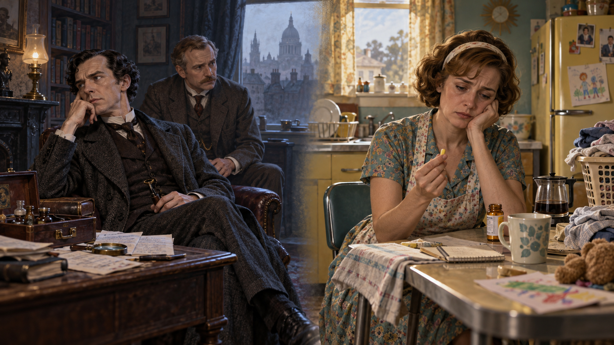
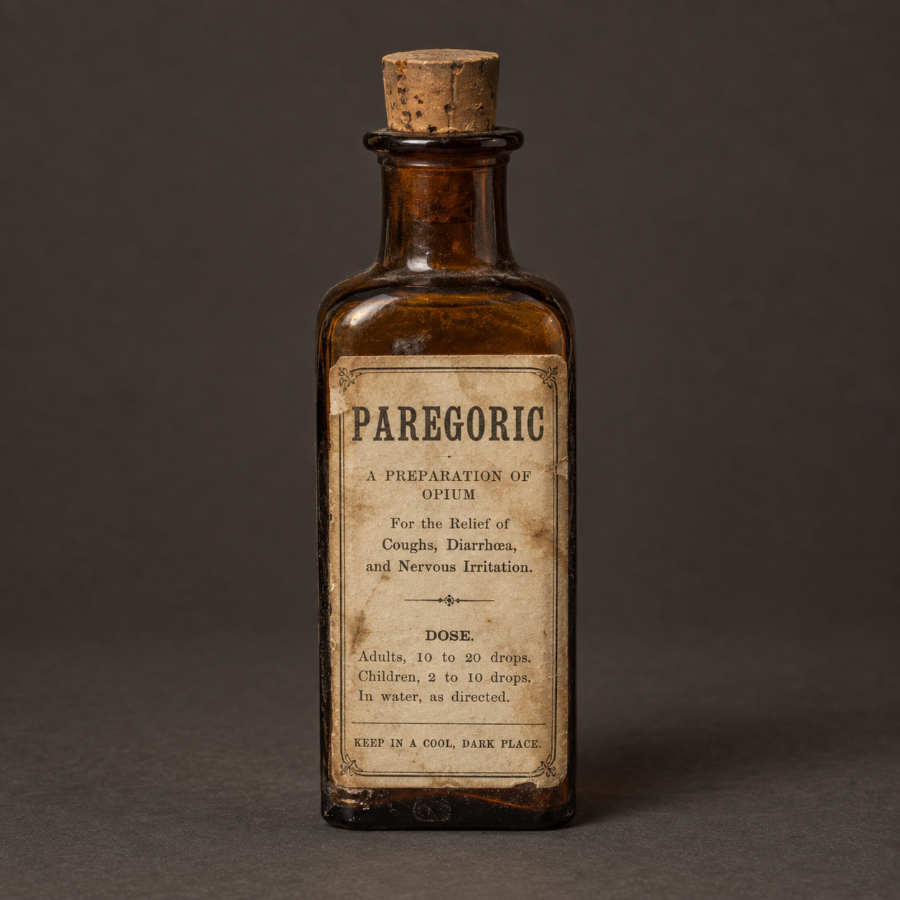
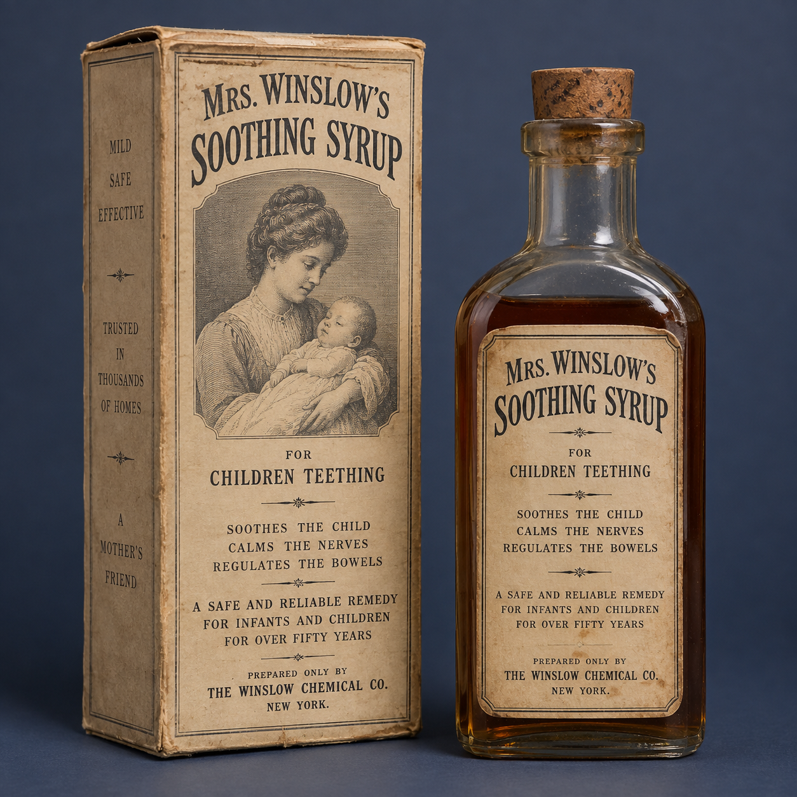

Human beings have long used psychoactive substances. What changes
across history is who uses them, why they use them, how products are
marketed, and when society responds with medicine, commerce, stigma,
or punishment.
Opening story · Legal drugs, gender, and social judgment
2.1 Two legal drug stories:
Sherlock Holmes and “Mother’s Little Helper”
Before the legal timeline, imagine two very different drug users. Both
obtain substances legally within their historical settings. One is a
celebrated male genius; the other is a woman trying to perform an
exhausting social role. The chemistry matters—but so do gender, class,
work, authority, and the meaning observers attach to the user.

The substance is only part of the story. Legal
access, gender, occupation, medical authority, and expected social
roles shape how observers interpret drug use.
Sherlock Holmes: drugs, boredom, and genius
In Arthur Conan Doyle’s The Sign of Four, published in
1890, the fictional detective injects a seven-percent cocaine
solution when no difficult case is available to stimulate his
mind. Other stories also associate him with morphine. Cocaine and
morphine were legally available in late-Victorian Britain,
although Holmes’s physician-friend Watson clearly warns that the
habit threatens his health and intellect.
The habit is not portrayed as harmless, but it does not erase
Holmes’s identity. He remains the brilliant detective whose
extraordinary mind supposedly needs relief from stagnation. His
status, occupation, masculinity, and usefulness protect the
meaning of the behavior: audiences can interpret the drug use as a
dangerous eccentricity attached to genius rather than as proof
that his whole character is deviant.
Women at home: medicine, endurance, and blame
Nineteenth-century households could legally purchase opium
preparations such as laudanum for pain, sleeplessness, coughs, and
conditions physicians labeled “female complaints.” Around the turn
of the twentieth century, heroin also appeared in legal commercial
medicines. Decades later, physicians prescribed tranquilizers to
large numbers of women. The Rolling Stones’ 1966 song
Mother’s Little Helper turned the era’s “little yellow
pill” into a cultural symbol of the medicated housewife.
Medicine could make women’s drug use respectable enough to sustain
domestic labor—until dependence, distress, or overdose made the
woman appear weak, irresponsible, or morally deficient. That
judgment could hide the conditions surrounding use: unpaid and
undervalued caregiving, repetitive isolation, restricted
occupational choices, unequal pay, limited financial independence,
and medical systems in which physicians possessed far more
authority than patients.
Legal status does not determine social judgment by itself.
Holmes and the housewife demonstrate that a legally available
substance can be interpreted as medicine, vice, eccentricity, coping,
illness, or deviance depending on who uses it and whether the user
still performs the role society expects.
Add intersectionality: the user is judged before the substance is
measured
Gender never operates alone. Race, ethnicity, social class, age,
disability, sexuality, motherhood, pregnancy, occupation, and
neighborhood can combine to shape who receives a prescription, who is
believed, who is watched, who is offered treatment, and who is
punished. A wealthy white man’s use may be privatized or medicalized
while a poor woman, a mother, or a woman from a racially marginalized
community may encounter several stigmatized labels at once. The same
pattern can affect legal prescription use, unauthorized use, and
survival strategies developed under unequal conditions.
Symbolic interactionismHolmes retains the master
status of “genius.” Women may acquire a master status such as “unfit
mother” or “addict” that overwhelms every other identity.
Conflict theoryPhysicians, pharmaceutical firms,
lawmakers, employers, and families have not held equal power to
define acceptable use—or to decide whose distress should be
medicated instead of changing unequal conditions.
Structural functionalismMedication may help a
person keep performing expected roles, but dependence and
unaddressed strain reveal latent dysfunctions within medicine, work,
and family life.
IntersectionalityOverlapping statuses change
exposure to stress, access to healthcare, credibility, surveillance,
stigma, child-custody risk, and the consequences attached to the
same behavior.
Carry this question into the timeline: When society
changes a drug law, is it responding only to pharmacological harm—or
also to a socially constructed image of the person believed to use
that drug?
An educational reconstruction based on the uploaded historical
advertisement. The display shows how heroin could appear beside
ordinary commercial medicines rather than inside a separate category
of “street drugs.”
Diacetylmorphine was first synthesized in 1874 and commercially
introduced by Bayer in 1898 under the name Heroin. It was
promoted for coughs and as a supposedly safer, less-addictive
substitute for morphine. Physicians and consumers did not yet have
modern clinical trials, standardized risk communication, or a full
understanding of dependence.
Heroin did not solve the morphine problem. It reaches the brain
rapidly and is converted to morphine in the body; repeated use can
produce tolerance, physical dependence, and opioid use disorder.
Reports of dependence and nonmedical use undermined the early
marketing claims, and legal controls expanded during the twentieth
century.
Accuracy note: Available historical sources support
the cough-treatment and morphine-substitute claims. They do not
support saying heroin was rejected because it was too expensive. This
case is better understood as an example of incomplete evidence,
commercial authority, and unintended consequences.
2.3 When the Feared User Defines
the Drug
Twentieth-century drug repression did not develop from pharmacology
alone. Political leaders, newspapers, reformers, professional groups,
and enforcement agencies repeatedly connected a substance to a
population already treated as foreign, disorderly, or threatening.
Concern about drug effects and prejudice could coexist, but racialized
claims helped determine which drug became urgent, which user became
dangerous, and which institution received power.
Smoking opium and Chinese immigrants
Local smoking-opium ordinances and the federal Smoking Opium
Exclusion Act of 1909 developed amid anti-Chinese exclusion. Opium
medicines used by white Americans remained culturally
distinguishable from the smoking practice associated with Chinese
communities.
Cocaine and Black men
Southern cocaine panics circulated racist claims that cocaine made
Black men violent, sexually threatening, unusually strong,
resistant to bullets, or likely to challenge white authority. Such
myths supported control and more heavily armed policing rather
than an objective comparison of all cocaine use.
Marijuana and Mexican immigrants
After the Mexican Revolution, the Spanish word
marihuana and the drug’s association with Mexican
migrants helped separate the feared intoxicant from familiar
medicinal cannabis. Later campaigns also tied marijuana to Black
jazz culture and youth rebellion.
The comparison question
Alcohol, opiates, cocaine, cannabis, nicotine, and pharmaceuticals
all carry harms. A valid policy analysis compares dose,
prevalence, dependence, toxicity, violence, medical benefit,
market conditions, and policy consequences—not the social status
of the stereotyped user.
Eight recurring features of prohibitionist messages
A feared or despised group is identified with a drug.
Many unrelated social problems are attributed to its use.
Prohibition is presented as necessary for social survival.
Any use is treated as though it were addiction.
Children’s corruption becomes the most emotionally powerful claim.
Users and sellers are reduced to predatory “fiends.”
Policy is framed as total prohibition versus unrestricted access.
People questioning the message are portrayed as part of the threat.
Use this as an evidence checklist: Which of these
features appears in a campaign? What objective evidence remains after
group stereotypes, false causal arrows, and either/or choices are
removed?
2.4 Drug use as a cultural
universal
Across recorded history, societies have used substances for nutrition,
healing, pain relief, stimulation, sleep, ritual, pleasure, endurance,
and social connection. Availability mattered. Communities often
learned to ferment plants, brew beverages, prepare leaves, extract
resins, or cultivate species found in their environments.
A cultural universal does not mean identical behavior.
Societies vary in the substances they recognize, the people allowed to
use them, the occasions considered appropriate, and the consequences
attached to use.
History also cautions us against judging the past only with present
knowledge. Earlier consumers often lacked accurate ingredient labels,
standardized doses, clinical trials, or modern warnings. Products
could appear respectable because physicians recommended them,
pharmacies sold them, or advertisements associated them with family
care.
2.5 MKUltra: LSD, state power,
and research without consent
Project MKUltra was a covert Central Intelligence
Agency program approved in 1953 during the Cold War. It supported a
wide range of research into behavioral modification, interrogation,
and substances that might alter perception or behavior. LSD became
its best-known drug, but the surviving record describes a broader
program involving chemicals, hypnosis, sensory techniques, and other
methods.
Secrecy changed the balance of power. MKUltra
joined scientific research to intelligence goals while keeping some
participants, researchers, and the public from knowing who directed
the work or how its risks were distributed. This is an original
educational illustration, not a photograph of an actual experiment.
The central ethical failure was not simply that LSD was
studied. Some people were exposed to drugs or experiments
without meaningful knowledge or consent. Secrecy, institutional
authority, and national-security claims prevented participants and
the public from evaluating the risks.
What is documented
A 1977 Senate hearing documented CIA-sponsored behavioral and
drug research, including tests involving unwitting people. The
program operated through universities, hospitals, prisons,
foundations, and other organizations, sometimes concealing the
CIA's role from researchers and participants.
Why the record is incomplete
Many MKUltra files were destroyed in 1973. Later investigators
recovered financial records and other surviving documents, but
no responsible account can claim that every project, participant,
injury, or outcome is now known.
Why it matters now
MKUltra demonstrates why research ethics cannot depend only on
the intentions or authority of an institution. Modern human-
subjects protections emphasize respect for persons, beneficence,
justice, independent review, and legally effective informed
consent.
Documented history versus cultural mythology
MKUltra is not merely a conspiracy theory: the program and serious
ethical violations are established in government records. At the same
time, its name is now attached to many claims that surviving evidence
does not establish. Sociological inquiry requires students to hold
both ideas together—institutions can conceal real misconduct, and
extraordinary additional claims still require evidence.
Big Three connection: Functionalism asks how secrecy
and weak oversight allowed an institution charged with national
security to undermine public trust. Conflict theory examines who had
the power to define acceptable risk and whose bodies carried that
risk. Symbolic interactionism examines how the label “MKUltra” now
shifts between a documented historical program and a symbol used in
popular culture for much broader suspicions.
Primary-source checkpoint:Read the U.S. Senate's 1977 MKUltra hearing record, then compare what it documents with one claim about MKUltra found
in popular media. What evidence would be needed to verify the
additional claim?
2.6 A selective historical
timeline
This timeline highlights broad turning points rather than claiming a
single linear history for every society.
Ancient world
Fermentation and plant medicines Alcoholic
beverages, opium poppy preparations, cannabis, coca, tobacco, and
other botanicals developed within distinct cultural, medical,
spiritual, and social traditions.
Medieval period
Distillation expands concentration Refinements in distillation allowed producers to
concentrate alcohol beyond the limits of ordinary fermentation.
Higher concentration changed portability, commerce, dose, and
risk.
1600s–1700s
Global exchange changes drug markets Colonialism and trade expanded the movement of coffee, tea,
tobacco, distilled spirits, opium, and other commodities.
Governments taxed some products while trying to suppress others.
1800s
Patent medicines and new alkaloids Commercial remedies frequently contained alcohol, opiates,
cocaine, cannabis, or other active ingredients. Isolation of
compounds such as morphine and cocaine increased medical
possibilities and introduced new risks.
Early 1900s
Labeling and federal control expand Public
concern about undisclosed ingredients, dependence, intoxication,
and misleading claims contributed to new food and drug regulation
and federal narcotics policy.
1953–1970s
MKUltra links drugs, secrecy, and state power CIA-sponsored research investigated LSD and other methods
of behavioral modification. Later investigations documented
experiments involving unwitting people and an incomplete record
after many files were destroyed in 1973.
Late 1900s–today
Public health and criminal justice compete Drug policy increasingly combines medicine, prevention,
treatment, harm reduction, regulation, taxation, and enforcement.
The balance remains politically contested and unequal across
substances and populations.
2.7 The historical medicine
cabinet
Select each artifact to compare its respected public image with what
students know today. These pictures are educational reconstructions,
not photographs of museum objects.

Paregoric
An opium tincture historically used for diarrhea, coughing, and
pain, including remedies given to children.
Then: A familiar pharmacy preparation could
represent relief and responsible care. Now:
An opioid-containing preparation raises questions about dose,
respiratory depression, dependence, labeling, and child
safety. Sociological question: How does
trust in medicine influence perceptions of risk?

Mrs. Winslow’s Soothing Syrup
A heavily marketed nineteenth-century teething remedy.
Historical formulations included morphine.
Then: Advertising connected the product to
motherhood, calm children, and household care. Now:
Giving an opioid-containing remedy to an infant without modern
dosing safeguards would provoke urgent medical and legal
concern. Sociological question: How did
marketing and limited regulation construct safety?
Vin Mariani
A nineteenth-century coca wine promoted as a tonic. Its public
image joined medicine, energy, celebrity endorsement, alcohol,
and coca.
Then: Consumers could encounter coca and
alcohol together as a fashionable restorative product. Now:
We recognize important interaction risks and sharply different
controls on alcohol and cocaine. Sociological question:
How do prestige and respected endorsers normalize a psychoactive
product?
Visual evidence rule: Reconstructions help us imagine
the object. Authentic advertisements and museum records remain the
primary sources for claims about packaging, ingredients, marketing,
and use.
2.8 Recurring sociological
patterns
Medicine can become deviance
A substance may move from accepted treatment to restricted drug as
evidence, professional standards, and law change.
Deviance can become medicine
A stigmatized substance or practice may later gain recognized
therapeutic uses without losing every controversy.
Products carry group meanings
Race, ethnicity, nationality, religion, gender, and class have
shaped which consumers appear respectable or threatening.
Markets influence definitions
Manufacturers, advertisers, pharmacies, physicians, and
governments can benefit from particular ways of defining a
product.
Knowledge changes risk
Ingredient disclosure, standardized dosing, clinical evidence, and
surveillance can reveal harms that consumers once could not
evaluate.
Regulation creates consequences
Policies can reduce harm while also producing illegal markets,
unequal enforcement, stigma, or barriers to treatment.
2.9 Historical accuracy checkpoint
Natural fermentation generally produces beverages measured in
percent alcohol by volume, not “percent proof.” In
the United States, proof equals twice the percentage of alcohol by
volume. Distillation increases concentration. Moonshine is not illegal
because it reaches a particular proof; illegality usually concerns
unlicensed production, taxation, distribution, or safety requirements.
Drug Enforcement Administration Museum. (n.d.).
Heroin bottle.
Musto, D. F. (1999).
The American disease: Origins of narcotic control (3rd
ed.). Oxford University Press.
National Commission for the Protection of Human Subjects of
Biomedical and Behavioral Research. (1979).
The Belmont report. U.S. Department of Health and Human Services.
Image disclosure: The four medicine-cabinet artifact
images and the MKUltra illustration on this page are AI-generated
educational reconstructions created for this course. They should not
be treated as photographs or primary-source evidence.
Reviewed: September 2026. Historical interpretations
and legal descriptions should be checked against the cited records.